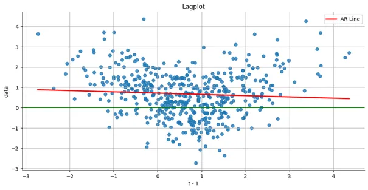

Time Series
Misc
- Resources
- {astsa} - Package, code, and docs for the books
- Time Series Analysis and Its Applications: With R Examples (graduate-level)
- See R >> Documents >> Time Series
- Time Series: A Data Analysis Approach using R (introductory)
- See R >> Documents >> Time Series
- Time Series Analysis and Its Applications: With R Examples (graduate-level)
- {astsa} - Package, code, and docs for the books
- Packages
- {timetk} - Various diagnostic, preprocessing, and engineering functions. Also available in Python
- {{diaquiri}}
- Aggregated values are automatically created for each data field (column) depending on its contents (e.g. min/max/mean values for numeric data, no. of distinct values for categorical data)
- Overviews for missing values, non-conformant values, and duplicated rows.
{kind=link}
{kind=link}
Basic Characteristics
Plot series
ts_tbl |> timetk::plot_time_series(date, value, .smooth = T, .smooth_span = 0.3, .interactive = F)- Includes a LOESS smoothing line. Control the curviness of LOESS using smooth_span
Missingness
- NAs affect the number of lags to be calculated for a variable
- e.g. exports only recorded quarterly but stock price has a monthly close price you want to predict. So if youre forecasting monthly oil price then creating a lagged variable for exports is difficult
- Bizsci (lab 29), minimum_lag = length_of_sequence_of_tail_NAs +1
- tail(ts) are the most recent values
- Bizsci (lab 29), minimum_lag = length_of_sequence_of_tail_NAs +1
- e.g. exports only recorded quarterly but stock price has a monthly close price you want to predict. So if youre forecasting monthly oil price then creating a lagged variable for exports is difficult
- Even if you dont want a lag for a predictor var and it has NAs, you need to
recipe::step_lag(var, lag = #_of_tail_NAs). So var has no NAs. - Consider seasonality of series when determining imputation method
- NAs affect the number of lags to be calculated for a variable
Outcome Variable Distribution
Zeros
- See notebook for tests on the number of zeros in Poisson section
- Might be tests in the intermittent forecasting packages, so see bkmks
- If so, see Logistics, Demand Forecasting >> Intermittent Demand for modeling approaches
- Are there gaps in the time series (e.g. missing a whole day/multiple days, days of shockingly low volume)?
Is data recorded at irregular intervals. If so:
- {{BINCOR}}handles cross-correlation between 2 series with irregular intervals and series with regular but different intervals
- I think common forecasting algorithms require regularly spaced data, so look towards ML, Multilevel Model for Change (MLMC), or Latent Growth Models
- May also try binning points in the series (like BINCOR does) or smoothing them to get a regular interval
{kind=link}
Seasonality
- STL Decomposition
Also see Forecasting, Decomposition
If we are interested in short- or long-term movements of the time series, we do not care about the various seasonalities. We want to know the trend component of the time series and if it has reached a turning point
Is there strong seasonality or trend?
If theres a pattern in the random/remainder component, this could indicate that there are other strong influences present.
-
ts_tbl %>% plot_stl_diagnostics( date, value, .feature_set = c("observed", "season", "trend", "remainder"), .trend = 180, .frequency = 30, .interactive = F ) Daily Seasonal Adjustment (DSA)
- Used to remove seasonal and calendar effects from time series data with daily observations. This allows you to analyze the underlying trends and patterns in the data without being masked by predictable fluctuations like weekdays, weekends, holidays, or seasonal changes.
- In a EDA context, the deseasonalized series can be used to locate the time series trend (daily data is very noisy), identify turning points, and compare components with other series.
- Packages: {dsa}
- Notes from Seasonal Adjustment of Daily Time Series
- Example shows it outperforming Hyndmans STR procedure in extracting seasonal components more completely.
- Daily data can have multiple seasonalities present
- Combines the seasonal trend decomposition procedure using Loess (STL) with a regression model with ARIMA errors
- Procedure
- STL adjusts intra-weekly periodic patterns.
- RegARIMA estimates calendar effects, cross-seasonal effects, and outliers.
- STL adjusts intra-monthly periodic effects.
- STL adjusts intra-annual effects
- Seasonality Tests (weekly, monthly, and yearly)
- {seastests} QS and Friedman (see bkmk in Time Series >> eda for example)
- QS tests null hypothesis is no positive autocorrelation in seasonal lags in the time series
- Friedman tests null hypothesis is no significant differences between the values period-specific means present in the time series
- For QS and Friedman, pval > 0.05 indicates NO seasonality present
- Additive or Multiplicative Structure
- Is the variance (mostly) constant (Additive) or not constant (Multiplicative) over time?
- Does the amplitude of the seasonal or cyclical component increase over time?
.png)
- The amplitude of the seasonal component increases over time so this series has a multiplicative structure
- Also multiplicative, if theres a changing seasonal amplitude for different times of the year
- {nlts::add.test} - Lagrange multiplier test for additivity in a time series
- If you have a multiplicative structure and zeros in your data (i.e. intermittent data), then they must handled in some way.
{kind=link}
{kind=link}
{kind=link}
Groups
- Quantile values per frequency unit (by group and total)
{timetk::plot_time_series_boxplot}
Average closing price for each month, each day of the month, each day of the week
When are dips and peaks?
Which groups are similar
What are the potential reasons behind these dips and peaks?
Example: Daily Power Consumption
- Median, the lower quartile, and the upper quartile for Saturdays and Sundays are below the remaining weekdays when inspecting daily power consumption
- Some outliers are present during the week, which could indicate lower power consumption due to moving holidays
- Moving holidays are holidays which occur each year, but where the exact timing shifts (e.g. Easter)
Example: {timetk} Calendar Effects
ts_tbl %>% plot_seasonal_diagnostics(date, value, .interactive = F)Example: Monthly Power Consumption
- Median, the lower quartile, and the upper quartile of power consumption are lower during the spring and summer than autumn and winter
Example: Demand per Month and per Category
- Variance of value by group
- Example: how sales vary between store types over a year
- Important to standardize the value by group
df %>% group_by(group) %>% mutate(sales = scale(sales))
- Which groups vary wildly and which are more stable
- Important to standardize the value by group
- Example: how sales vary between store types over a year
- Rates by group
- Example: sales($) per customer
df %>% group_by(group, month) %>% mutate(sales_per_cust = sum(sales)/sum(customers)
- Example: sales($) per customer
{kind=link}
Statistical Features
- Outliers
Also see
- PCA the Features below
- Anomaly Detection
-
walmart_sales_weekly |> group_by(id) |> plot_anomaly_diagnostics(Date, Weekly_Sales, .message = FALSE, .facet_ncol = 3, .ribbon_alpha = 0.25, .interactive = FALSE)
- Statistical Features vs Outcome
First Autocorrelation Coefficient vs Categorical vs Binary Outcome
- There does seem to be some variance. An interaction between autocorrelation and the cateogorical variable might be predictive of a heart murmur event.
- Trend Strength and Seasonal Strength plots
- {tsfeatures} has seasonality strength metric
- Shannon Spectral Entropy
feasts::feat_spectralwill compute the (Shannon) spectral entropy of a time series, which is a measure of how easy the series is to forecast.- A series which has strong trend and seasonality (and so is easy to forecast) will have entropy close to 0.
- A series that is very noisy (and so is difficult to forecast) will have entropy close to 1.
- PCA the Features
Identify characteristics for high dimensional data (From fpp3)
library(broom) library(feasts) tourism_features <- tourism |> features(Trips, feature_set(pkgs = "feasts")) pcs <- tourism_features |> select(-State, -Region, -Purpose) |> prcomp(scale = TRUE) |> augment(tourism_features) pcs |> ggplot(aes(x = .fittedPC1, y = .fittedPC2, col = Purpose)) + geom_point() + theme(aspect.ratio = 1)- Holiday series behave quite differently from the rest of the series. Almost all of the holiday series appear in the top half of the plot, while almost all of the remaining series appear in the bottom half of the plot.
- Clearly, the second principal component is distinguishing between holidays and other types of travel.
- The four points where PC1 > 10 stand out as outliers.
-
outliers <- pcs |> filter(.fittedPC1 > 10) |> select(Region, State, Purpose, .fittedPC1, .fittedPC2) outliers #> # A tibble: 4 5 #> Region State Purpose .fittedPC1 .fittedPC2 #> <chr> <chr> <chr> <dbl> <dbl> #> 1 Australia's North West Western Australia Business 13.4 -11.3 #> 2 Australia's South West Western Australia Holiday 10.9 0.880 #> 3 Melbourne Victoria Holiday 12.3 -10.4 #> 4 South Coast New South Wales Holiday 11.9 9.42 outliers |> left_join(tourism, by = c("State", "Region", "Purpose"), multiple = "all") |> mutate(Series = glue("{State}", "{Region}", "{Purpose}", .sep = "\n\n")) |> ggplot(aes(x = Quarter, y = Trips)) + geom_line() + facet_grid(Series ~ ., scales = "free") + labs(title = "Outlying time series in PC space") Why might these series be identified as unusual?
- Holiday visits to the south coast of NSW is highly seasonal but has almost no trend, whereas most holiday destinations in Australia show some trend over time.
- Melbourne is an unusual holiday destination because it has almost no seasonality, whereas most holiday destinations in Australia have highly seasonal tourism.
- The north western corner of Western Australia is unusual because it shows an increase in business tourism in the last few years of data, but little or no seasonality.
- The south western corner of Western Australia is unusual because it shows both an increase in holiday tourism in the last few years of data and a high level of seasonality.
{kind=link}
{kind=link}
{kind=link}
{kind=link}
Association
- See Association, Time Series
- Lag Scatter Plots
Lag scatterplots between target series and lags of the target series (i.e. yt vs yt+h)
astsa::lag1.plot(y, 12) # lags 1-12 of y astsa::lag1.plot(soi, 12, col=astsa.col(4, .3), pch=20, cex=2) # prettified- Autocorrelation values in upper right corner
- Autocorrelations/Cross-Correlation values only valid if relationships are linear but maybe still useful in determining a positive or negative relationship
- LOESS smoothing line added
- Nonlinear patterns can indicate that behavior between the two variables is different for high values and low values
- Autocorrelation values in upper right corner
Lag scatterplots between target series and lags of the predictor Series (i.e. yt vs xt+h)
astsa::lag2.plot(y, x, 8) # y vs lags 0-8 of x astsa::lag2.plot(soi, rec, 8, cex=1.1, pch=19, col=5, bgl='transparent', lwl=2, gg=T, box.col=gray(1)) #prettified- If either series has autocorrelation, then it should be prewhitened before being inputted into the function.
- Cross-Correlation (CCF) values in upper right corner
- Autocorrelations/Cross-Correlation values only valid if relationships are linear but maybe still useful in determining a positive or negative relationship
- Nonlinear patterns can indicate that behavior between the two variables is different for high values and low values
- Partial Autocorrelation
Removes the correlation between \(y_{t-k}\) and lags before it (\(y_{t-(k-1)}, \ldots, y_{t-1}\)) to get a more accurate correlation between yt and yt-k. Sort of like a partial correlation but for a univariate time series.
Can be interpreted as the amount correlation between yt-k and yt thats not explained by the previous lags.
Example: {timetk} plots ACF and PACF charts
m4_hourly %>% group_by(id) %>% plot_acf_diagnostics( date, value, # ACF & PACF .lags = "7 days", # 7-Days of hourly lags .interactive = FALSE )-
- Contains several features involving partial autocorrelations including:
- The sum of squares of the first five partial autocorrelations for the original series
- The first-differenced series and the second-differenced series.
- For seasonal data, it also includes the partial autocorrelation at the first seasonal lag.
- Contains several features involving partial autocorrelations including:
{kind=link}
{kind=link}
{kind=link}
{kind=link}
Stationarity
- CCF and most statistical and ML models need or prefer stationary time series.
- ACF
For a stationary series, the ACF will drop to zero relatively quickly, while the ACF of non-stationary data decreases slowly.
For a non-stationary series:
- The value of r1 (correlation between yt and yt-1) is often large and positive.
- A steady, slow decline towards 0 indicates trend is present
- Is the series a trend-stationary or unit root process?
- Test all series of interest with ADF and KPSS tests (See Forecasting, Statistical >> Preprocessing >> Detrend or Difference
- Is the series a trend-stationary or unit root process?
- A scalloped pattern indicates seasonality is present
95% CIs are \(\pm \frac{1.96}{\sqrt{T}}\) where \(T\) is the length of the time series.
Example:
forecast::Acf(plot = TRUE)orforecast::ggAcf- The ACF of the differenced Google stock price (right fig) looks just like that of a white noise series. There are no autocorrelations lying outside the 95% limits, and the Ljung-Box
- Q statistic (Ljung-Box) has a p-value of 0.355 (for h = 10) which implies the ts is stationary. This suggests that the daily change in the Google stock price is essentially a random amount which is uncorrelated with that of previous days.
- Ljeung-Box
stats::Box.testorfeasts::ljung_box- x: numeric or univariate ts
- lag: Recommended 10 for non-seasonal, 2m (e.g. m = 12 for monthly series, m = 4 for quarterly), maximum is T/5 where T is the length of the series.
- type: Lj
- Interpretation: small Q* or p-value > 0.05 means the time series is stationary.
{kind=link}
Nonlinear
- Misc
- Packages
- {tseriesEntropy} - Tests for serial and cross dependence and nonlinearity based on Bhattacharya-Hellinger-Matusita distance.
Trho.test.AR.p- Entropy Tests For Nonlinearity In Time Series - Parallel Versionsurrogate.SA- Generates surrogate series through Simulated Annealing. Each surrogate series is a constrained random permutation having the same autocorrelation function (up to nlag lags) of the original series x.surrogate.ARs- Generates surrogate series by means of the smoothed sieve bootstrap.
- {tseriesEntropy} - Tests for serial and cross dependence and nonlinearity based on Bhattacharya-Hellinger-Matusita distance.
- Packages
- Lag Plots
- U-pattern shown in nonlinear
- See Association for code
- Average Mutual Information
- Example: link
- ACF
- Assuming this ts has been differenced and/or detrended and there is still autocorrelation at lags 6 and 8. So, attempts at stationarity have failed
- Average Mutual Information

- If the time series is linear, the AMI should decay exponentially or follow a power-law decay as the time lag increases, whereas if the time series is nonlinear, the AMI may decay more slowly or exhibit specific patterns such as oscillations or plateaus, indicating the presence of nonlinear structures or long-range correlations.
- Oscillations are present in this time series.
- Compare with a surrogate model data. If the AMI decay pattern of the original time series deviates significantly from that of the surrogate data, it suggests the presence of nonlinearity.
- {nonlinearTseries::mutualInformation}
- If the time series is linear, the AMI should decay exponentially or follow a power-law decay as the time lag increases, whereas if the time series is nonlinear, the AMI may decay more slowly or exhibit specific patterns such as oscillations or plateaus, indicating the presence of nonlinear structures or long-range correlations.
- ACF
- Example: link
- Surrogate Testing
Example: From {nonlinearTseries} vignette
st <- surrogateTest( lor.x, significance = 0.05, one.sided = F, FUN = timeAsymmetry, do.plot=T) ## Null Hypothesis: Data comes from a linear stochastic process ## Reject Null hypothesis: ## Original data's stat is significant larger than surrogates' statstimeAsymmetryis a function thats included in the package. It measures the asymmetry of a time series under time reversal. If linear, it should be symmetric.
- Compare Oberservational vs Surrogate Data
- Chaotic nature of the time series is obvious (e.g. frequent, unexplainable shocks that cant be explained by noise)
- Create an artificial data set using a gaussian dgp and compare it to the observed data set
- For details see Nonlinear Time Series Analysis (pg 6 and Ch.4 sect 7.1)
- Takes the range of values, mean, and variance from the observed distribution and generates data
- Then data is filtered so that the power spectum is the same
- Phase Portraits are used to compare the datasets.
{kind=link}
{kind=link}
{kind=link}